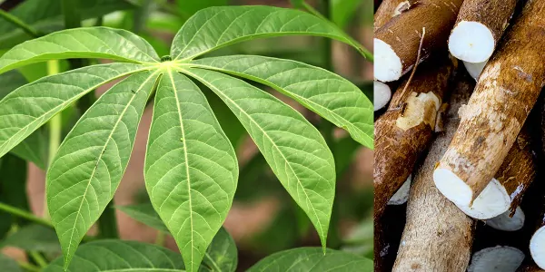

Aipim
Quais são suas funcionalidades?
já pensou em saber mais sobre o Aipim?, descubra aqui mesmo algumas curiosidades sobre ele!!!
Culinária
As funcionalidades da mandioca/aipim são diversas, como por exemplo
na culinária, abaixo temos alguns sites que mostram receitas com aipim.
Receita de Bolo de Aipim
Receita de Doce de Aipim
Medicina

O consumo dela tem benefícios na medicina, alguns deles são
ser alimento para bactérias benéficas do instestino, abaixo temos
um site que mostra mais sobre isso.
Benefícios da Mandioca/Aipim